Get a reading
Click the arrows to expand and collapse each of the six symbol groups:
Animalia / Selfhood Collection (Elements #1-8)

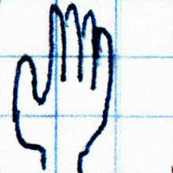

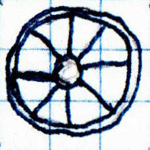

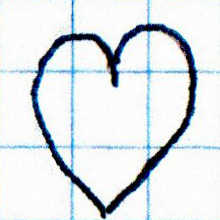
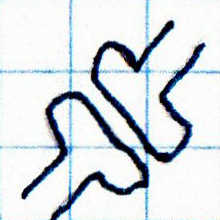

| Chart Order | Glyph Image | Symbol Name | Drawing Description | Keyword Associations |
|---|---|---|---|---|
| #1 | |
That Which Knows | A Pictogram of an Eye | Understanding, Perception, Insight |
| #2 | That Which Acts | A Pictogram of a Hand | Craft, Activity, Making, Doing | |
| #3 | |
That Which Is | A Pictogram of a House | Location, Structure, Existence, Atmosphere |
| #4 | That Which Moves | A Pictogram of a Wheel | Going, Leaving, Arriving, Dynamic | |
| #5 | |
State of Matter | A Stick Figure Person | Health, Illness, Body, Incarnation, Physical |
| #6 | State of Feeling | A Heart Symbol | Emotional, Aversion, Preferences, Attraction | |
| #7 | State of Mind | A Synapse Symbol | Mental, Mindset, Belief, Thought, Process | |
| #8 | |
State of Self | A Yin-Yang | Spiritual, Totality, Wholeness, Integrations |
Logic / Operative Collection (Elements #9-16)
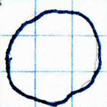
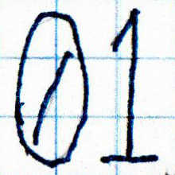
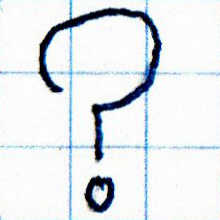

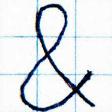
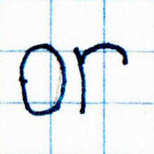


| Chart Order | Glyph Image | Symbol Name | Drawing Description | Keyword Associations |
|---|---|---|---|---|
| #9 | Continuous Aspects | A Circle | Uninterrupted, Analog, Spectrum | |
| #10 | Discrete Aspects | A Zero and a One | All or Nothing, Quantized, Digital | |
| #11 | The Unknowns | A Question Mark | Uncertainty, Variable, Inquiry | |
| #12 | |
Negations | An Exclamation Point | 'Not' Operator, False, Simulacrum, Disputed |
| #13 | Concurrences | An Ampersand | 'And' Operator, Both, Co-Occurring, Including | |
| #14 | Dysjunctions | The Word 'Or' | 'Or' Operator, Alternatives, Choices | |
| #15 | Implications | A Right Pointing Arrow Sign | 'If/Then' Operator, Implications, Conditional | |
| #16 | Entanglements | A Two Headed Horizontal Arrow Sign | 'If and Only If' Operator, Interdependence, Necessity |
Sciences / Systematic Collection (Elements #17-24)
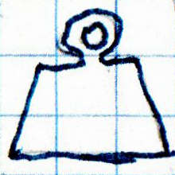


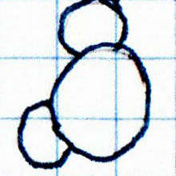


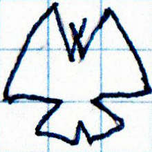
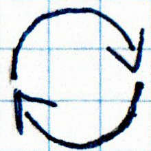
| Chart Order | Glyph Image | Symbol Name | Drawing Description | Keyword Associations |
|---|---|---|---|---|
| #17 | The Kilogram | A Pictogram of a Reference Weight for a Balance Scale | Physics, Material, Natural forces, Tangible | |
| #18 | |
Atomic Legos | A Benzene Ring Symbol | Chemistry, Atomic, Molecular, Electric |
| #19 | |
We the Living | A Pictogram of a Leaf | Biology, Living, Organic, Organism, Metabolism |
| #20 | The Blue Marble | A Water Molecule Space-Filling Model Pictogram | Ecology, Biome, Ecosystem, Biosphere, Environment | |
| #21 | |
It Takes All Kinds | An Empty 3 Part Venn Diagram Constructed of Circles | Set Theory, Groups, Definitions, Inclusions, Exclusions, Unions, Intersections |
| #22 | |
Chances & Cohorts | A Pictogram of a Dice Showing Five Pips | Probability, Statistics, Chance, Odds, Randomness, Patterns, Distribution |
| #23 | Divergences | A Pictogram of a Butterfly | Chaos Theory, Nonlinear, Complex, Recursive, Turbulent | |
| #24 | Cycles & Flows | Two Curved Arrow Signs in the Shape of a Circle Pointing One's Head to the Other's Tail | Emergent Systems, Systems Theory, Feedback Flows, Interacting, Superorganisms |
Humanism / Archetypes Collection (Elements #25-32)
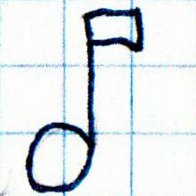
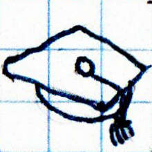
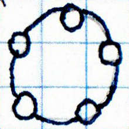
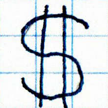
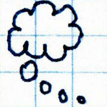
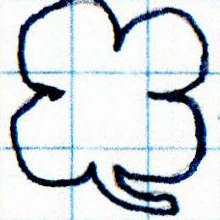

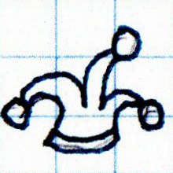
| Chart Order | Glyph Image | Symbol Name | Drawing Description | Keyword Associations |
|---|---|---|---|---|
| #25 | Expressions | A Music Quarter Note Sign | Creativity, Synthesis, Invention, Imagination, Art, Music, Story | |
| #26 | The Transceivers | A Pictogram of a Graduation Mortarboard Hat | Education, Learning, Knowledge, Teaching, Experiences | |
| #27 | City, Tribe & Family | Five Small Circles Joined by One Bigger Ring | Social Interaction, Balance, Fairness, Justice, Society, Community | |
| #28 | Utility Vs. Valuation | A Dollar Sign | Value, Worth, Usefulness, Exchange, Exchange, Economy | |
| #29 | The Horde Within | A Cartoon Thought Bubble | Psychology, Thought, Cognition, The Mind, Motivation, Personality | |
| #30 | Star Alignments | A Pictogram of a Four Leaf Clover | Luck, Fate, Karma, Coincidence, Synchronicity | |
| #31 | |
Extra Energies | A Pentagram | Magic, Intention, Ethereal, Extraordinary, Supernatural |
| #32 | Across the Mirror | A Pictogram of a Court Jester, Fool, or Playing Card Joker's Hat | Trickster, Paradox, Surprise, Clarity, Truth, Humor |
Forces of Nature / Existential Signposts Collection (Elements #33-40)
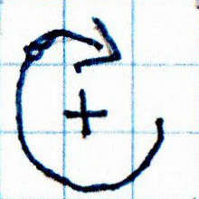
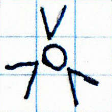


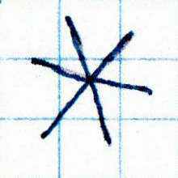
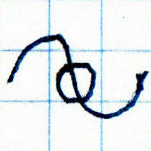


| Chart Order | Glyph Image | Symbol Name | Drawing Description | Keyword Associations |
|---|---|---|---|---|
| #33 | Active Stillness | An Arrow Forming Three Quarters of a Circle with a Plus Sign in the Center | Here, Now, Silence, Mindful, Harmony, Patience, Contemplation, Consideration | |
| #34 | Focal Points | A Small Circle with Three Equally Spaced Radially Symmetric Angle Brackets Pointing Inward at It | Concentration, Massed, Clustering, Uniform, Alignment | |
| #35 | |
Scatterings | Three Arrow Signs Spreading from One Origin Point with Radially Symmetric Arrangement | Spread, Diverse, Varied, Distraction, Dispersion, Diffuse, Diluted |
| #36 | |
Ordering the House | A Set of Parentheses with Nothing Between Them | Sequential, Arrange, Composite, Assembly, Order |
| #37 | The Spark | An Asterisk | Desire, Life, Will, Beginnings, Autonomous | |
| #38 | Nondualism | One Up-Down Cycle of a Sine Wave with a Small Circle Drawn Over Its Center Point | Wavicle, Mass, Energy, Objects, Space, Fields, Points | |
| #39 | |
Tick-Tock | A Pictogram of an Analog Clock Face Showing About 12:07 | Time, waiting, Span, Speed, Patience, Duration |
| #40 | |
Releasing | A Pictogram of a Human Skull | Endings, Fear, Loss, Conclusion, Completion |
Cognition / Communicative Collection (Elements #41-48)
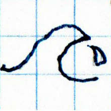
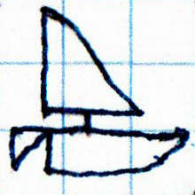
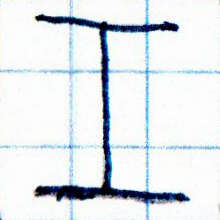
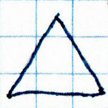

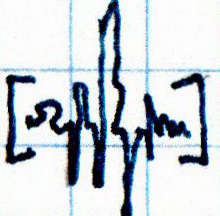
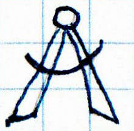
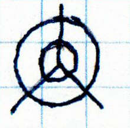
| Chart Order | Glyph Image | Symbol Name | Drawing Description | Keyword Associations |
|---|---|---|---|---|
| #41 | Boundless Ocean | A Pictogram of an Ocean Wave Breaking | Unconscious, Deep Self, Causality, Role, Persona | |
| #42 | A Very Small Boat | A Pictogram of a Sailboat | Conscious Mind, Belief, Awareness, Thought, Purpose | |
| #43 | Your Agent | The Capitalized Letter 'I' | Identity, Identical, Outward Self, Self Knowledge | |
| #44 | The Deception | An Equilateral Triangle | Essence, Ideal, Perfection, Fallacy, Lies | |
| #45 | |
High Energy Particle | High Energy Particle | Symbol, Glyph, Alphabet, Unit, Sign |
| #46 | The Utterance | A Squiggle Resembling a Cross Between a Chaotic Signature and Sound Wave Between a Pair of Square Brackets | Language, Communication, Words, Speech, Transmission | |
| #47 | Simple Machinery | A Pictogram of a Drawing Compass | Tool, Craft, Purpose, Technology, Measuring, Technique | |
| #48 | Three Cases of Spaces | Two Concentric Circles with 3 Lines Radiating From Their Center with Radial Symmetry | Coordinate Space, Map, Graph, Grid, Record, Plan |
The Key of Sparrows website and glyph based fortune telling or brainstorming schema, graphics and writings © Copyright © Cooper Dozier 2016-2024 ©. Information about various other works and projects of mine may be found at https://linktr.ee/cooperdozier. Background image source: @cedric_photography on Unsplash.com
Product Launch!
Got my first The Key of Sparrows product online, available for purchase. 12x18" laminated print with brief instructions on the back. A modern non-tarot oracle, with symbol choices oriented towards science, psychology, mindfulness, modernity, and realism: The Key of Sparrows laminated print on Zazzle
(Actual Product is higher resolution and much larger than these JPG images (easier to read + better looking) - 300 dots per inch at 12x18 inches)
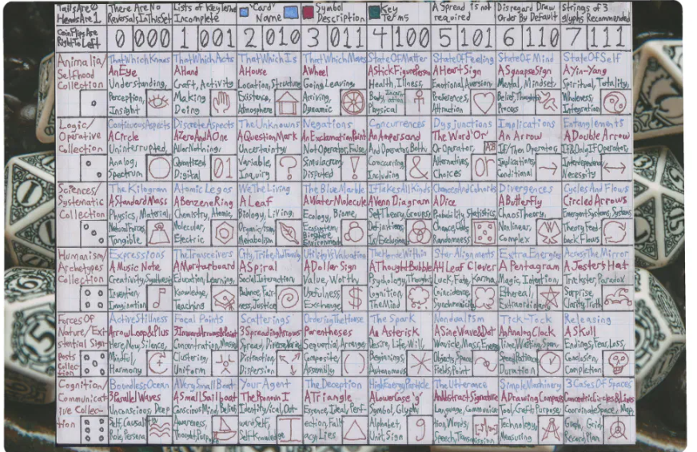
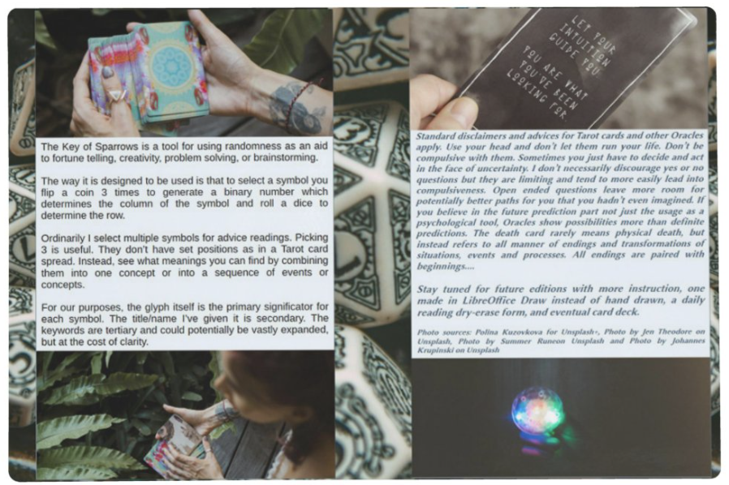
This page and site will continue to evolve and be refined. Since I am now sending out postcards with this URL and glyph based 'fortunes' I need to get something online. This is kind of the minimum quality I was willing to expose to the public. There's a bit more to this brainstorming / fortune telling / creativity tool / divination architecture but this is all you need to form your own conclusions or ideas if you want to draw meaning from it. I first began working on a version of this in 2016 and I think it has just about reached its final version, although I intend to eventually refine the designs into a card deck, posters and other more graphically polished items to try to sell, probably through a print on demand service. I have my doubts about whether getting significant inventory manufactured and trying to place it in stores or sell online would produce results worth the investment.
I usually work with these in chains of 3 symbols, and u7nlike tarot, the positions do not have predetermined significance and there is no such thing as 'reversed cards'. But you can use spreads or other bells and whistles however you want. When the logic symbols or the parentheses come up I tend to draw more or arrange them in such a way as to make a legible math/logic-like 'sentence'.
There are two ways I usually use to draw the symbols. For expediency there is random.org which gathers its entropy from some sort of 'atmospheric noise' to get 'true random numbers' instead of the pseudo-random number generator computers use for most tasks. They've been running since the 90s and you can use them as a certified third party for lotteries or drawings for a fee. The other way is to set the symbols up as an 8x6 grid and select the row by rolling a six sided dice and selecting the column by flipping a coin three times to generate a binary number from 0-7 from the heads and tails of the coin. But be sure of whether youre writing numbers from right to left or left to right before you start to avoid confusion.
Either method provides a much stronger randomization than card shuffling, I do believe, and with less work. Use your head and don't let oracles of any type run your life or get compulsive with them. There may or may not be something to it on some occasions. But brainstorming and fortune telling, depending on how you approach them, can be nearly the same practice. And sometimes you may want to make a decision where there is no definite right answer (like in writing a novel). Or with questions wherein you have no possible way to access information about what will produce the 'best' outcomes you want (such as most of the significant things looming up in your not-predestined future, for example) and with them you want a little extra help or outside ideas to shake your mind into a new shape? In such a case this system could be helpful, whether you believe it has any real predictive power or not. And you can do the same thing with any collection of 48 elements of any type (or another quantity that can be arrayed in a grid, but the ubiquity of six sided dice and coins makes 48 a handy number of elements or keys to use in your preferred systems).